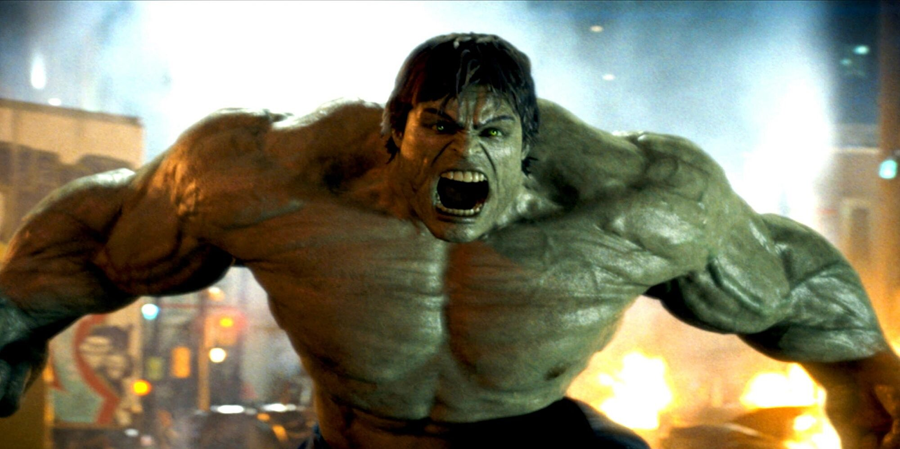

The Hulk
is a fictional superhero appearing in publications by the American publisher Marvel Comics. Created by writer Stan Lee and artist Jack Kirby, the character first appeared in the debut issue of The Incredible Hulk (May 1962). In his comic book appearances, the character is both the Hulk, a green-skinned, hulking and muscular humanoid possessing a vast degree of physical strength, and his alter ego Dr. Robert Bruce Banner, a physically weak, socially withdrawn, and emotionally reserved physicist. The two exist as independent dissociative personalities, and resent each other.
Following his accidental exposure to gamma rays saving the life of Rick Jones during the detonation of an experimental bomb, Banner is physically transformed into the Hulk when subjected to emotional stress, at or against his will, often leading to destructive rampages and conflicts that complicate Banner's civilian life. The Hulk's level of strength is normally conveyed as proportionate to his level of anger. Commonly portrayed as a raging savage, the Hulk has been represented with other personalities based on Banner's fractured psyche, from a mindless, destructive force, to a brilliant warrior, or genius scientist in his own right. Despite both Hulk and Banner's desire for solitude, the character has a large supporting cast. This includes Banner's lover Betty Ross, his best friend Rick Jones, his cousin She-Hulk, and therapist and ally Doc Samson. In addition, the Hulk alter ego has many key supporting characters like his co-founders of the superhero team the Avengers, his queen Caiera, fellow warriors Korg and Miek, and sons Skaar and Hiro-Kala. However, his uncontrollable power has brought him into conflict with his fellow heroes and others. Despite this, he tries his best to do what's right while battling villains such as Leader, Abomination, Absorbing Man and more.
Lee stated that the Hulk's creation was inspired by a combination of Frankenstein and Dr. Jekyll and Mr. Hyde.[3] Although the Hulk's coloration has varied throughout the character's publication history, the most usual color is green.
One of the most iconic characters in popular culture,[4][5] the character has appeared on a variety of merchandise, such as clothing and collectable items, inspired real-world structures (such as theme park attractions), and been referenced in a number of media. Banner and the Hulk have been adapted in live-action, animated, and video game incarnations. The character was first play